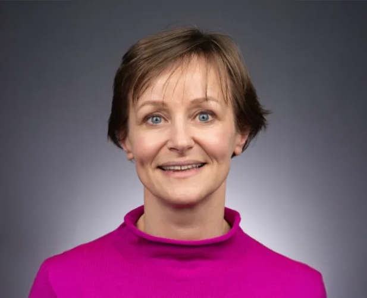
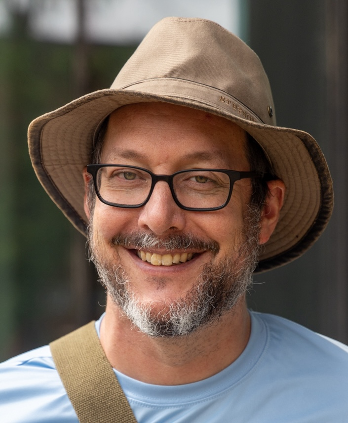

CS Theory Club
Undergraduates enjoying the foundations of theoretical computer science.

Wednesdays at 5:00 PM — CIS 450
Pizza provided!
About Us
We are a community of Cornell students who are passionate about theoretical computer science (TCS)! We hold weekly meetings to discuss anything that sparks curiosity and gets us thinking like theoretical computer scientists. This semester, we are hosting weekly talks by professors, graduate students, and undergraduates. Topics range from presenting cutting-edge research and motivating open problems in TCS to sharing personal stories and much more.
Come to any of our meetings! We warmly welcome anyone who is interested—undergraduate or graduate, from any area of study. We strive to make our meetings as accessible as possible. Because TCS requires a certain level of mathematical maturity, we expect experience with proofs and probability at the level of CS 2800 and recommend familiarity with algorithms at the level of CS 4820 (see: https://www.cs.cornell.edu/courses/cs4820/2025sp/lectures/).
Come to any of our meetings! We warmly welcome anyone who is interested—undergraduate or graduate, from any area of study. We strive to make our meetings as accessible as possible. Because TCS requires a certain level of mathematical maturity, we expect experience with proofs and probability at the level of CS 2800 and recommend familiarity with algorithms at the level of CS 4820 (see: https://www.cs.cornell.edu/courses/cs4820/2025sp/lectures/).
Topics We Explore
Algorithms
Design and analysis of efficient algorithms.
Complexity Theory
Understanding computational hardness.
Cryptography
Theoretical foundations of secure computation.
Quantum Computing
Power and limits of quantum algorithms.
Automata Theory
Languages, machines, and the structure of computation.
Schedule

Title TBD

Title TBD

Title TBD
Title TBD
Title TBD

Title TBD
Title TBD
Title TBD
Title TBD
Title TBD